Field rotation module¶
This module can be used to measure how accurately the collimator angle is calibrated, or how accurately the treatment couch rotates from one angle to another. It can also be used to test that the EPID is not rotated with respect to the gantry axis of rotation.
You can perform three types of measurements (see Options below):
The accuracy of collimator angle calibration at cardinal positions. This is done independently from external references such as the optical field.
The accuracy of relative collimator movement, say from angle 0 to any specific angle.
The accuracy of relative couch rotation.
You can choose between these three options by selecting appropriate Image type. Measuring the absolute collimator angle and couch rotation requires the use of two ballbearing phantoms. Similar to that used for the Winston-Lutz test.
Accurate collimator calibration and accurate couch rotation are vital for non-central stereotactic treatments. With this module you can use the EPID to replace manual measurements.
Options¶
Image type
Collimator absolute is used to measure the accuracy of collimator angles at -180, -90, 0, 90, and 180 degrees. Two images of the BBs must be acquired with a narrow field at two opposite gantry angles.
Collimator relative is used to measure the accuracy of collimator rotation from one angle to another. In this case, no BB should be inside the narrow field, and all measurements must be performed at the same gantry angle.
Couch relative is used to measure the accuracy of couch rotation from one angle to another. Two BBs should be located within a large field, and all measurements are performed at the same gantry angle.
- Sampling direction
Here you can set the direction along which the software will search for (long) field edges. If, for example, you are testing collimator angles 0 or 180, you should choose up-down direction. This option is applicable only for Collimator absolute and Collimator relative.
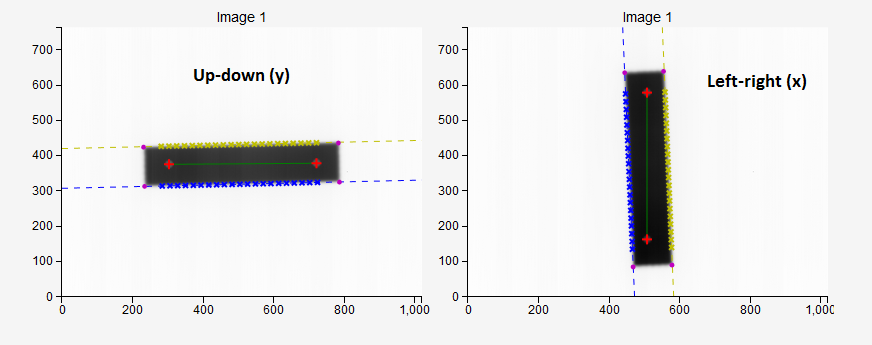- Clip box
The size of the central portion of the image beyond which pixel values will be set to background signal. If you don’t want to clip the image, put 0. This option is useful if you have unwanted exterior parts of the field that you would like to cut out of the image.
- Sampling lines
The number of sampling lines that the software will use to detect field edges. Lines are equidistant. Each line follows the pixel column or pixel row. The actual number of lines may be smaller than defined: the final line may be omitted because it falls outside the specified margin.
- Margin
How many pixels lines will be skipped from each side of the field edge when sampling. This is needed to prevent sampling edges too close to the lateral border of the field, or to prevent sampling field edges that are too close to the BBs.
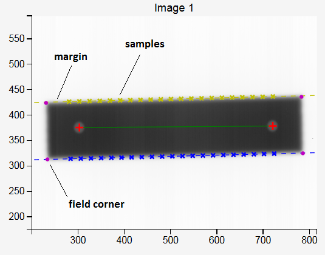- Median filter
Sometimes the algorithm may fail when searching for the BBs. In this case, try to filter the image and re-analyze. More on: scipy_median_filter .
- Invert image?
Check this if you want to invert the image. This option should not be necessary because Pylinac will check for proper inversion.
- Choose colormap
Here you can pick the colormap for field display.
- High contrast (kV) images?
This option can be used to detect the BB within a kV field.
Collimator absolute¶
MLC leaves are chosen as the mechanical reference when defining the angle of the collimator, not jaws or external collimator landmarks. Collimator angle is best defined with respect to the gantry axis of rotation. That is, at collimator angles -180, 180, and 0, the sides of the MLC leaves should be exactly perpendicular to the gantry axis of rotation, and parallel at angles -90 and 90.
Usually 0 degrees is the main angle that needs to be accurately defined. Other angles are then obtained as relative rotations from 0. To measure the accuracy of angle 0 prepare a rectangular field shaped with MLC leaves as shown below. The field size should be approximately 15 cm x 3 cm. On Elekta Agility linacs there is no diaphragm in the X direction. In this case you must push the unwanted MLC opening as far away from the field as possible. Y diaphragms should be open just enough to expose the sides of the MLC leaves.
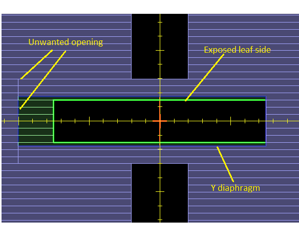The procedure is as follows:
Place two ballbearing phantoms on the couch inside the field. The BBs should be at a distance approximately 11 cm from each other. It does not matter how accurately the BBs are positioned inside the field. The BBs should be vertically at the isocenter.
Acquire two images of the BBs with the narrow field, one from gantry 0 and another at 180. Do not move the collimator or change the field!
Analyze the images. Detect the angles of field edges and the angle of the line between BBs. Determine the error in collimator calibration.
Warning
Always check that the BB centers have been detect properly. Zoom in on the image and make sure the red cross is within the sphere. The algorithm for finding the BBs may fail if the BBs are too close to the edge of the field, or if there is significant asymmetry of the beam.
Analysis¶
In the mechanical version of this test one puts a sheet of graph paper over the couch end, aligning the lines on the paper with the crosshair at collimator angle 0. Then one rotates the gantry to 180 degrees. If the crosshair projected from bellow onto the sheet changes in angle with respect to the lines on the graph paper, the collimator is not properly calibrated.
In our version we use two metal spheres instead of the graph paper to serve as a reference direction in 3D space. And instead of the optical crosshair to measure the collimator angle error we use a rectangular field with MLC defined edges captured on the EPID.
Figure below shows an example. Image 1 was taken at gantry 0, and image 2 at gantry 180. Vertical coordinates on both images correspond to the LONG spatial coordinate. However, horizontal coordinates are not equal to LAT spatial coordinates. In fact, when going from gantry 0 to gantry 180, they change sign. The effect of this is that we must, when doing the analysis of image 2, always invert the horizontal coordinates (read the image from right to left) so that we can get the angle of the field with respect to the BBs in spatial coordinates properly.
The field does not rotate when the gantry is rotated. That is because the EPID moves with the gantry. The line between the BBs, however, does.
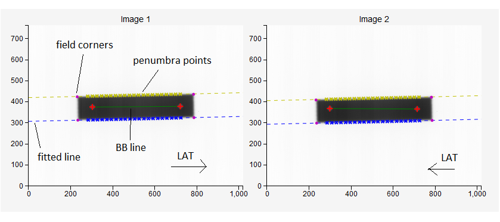The analysis goes like this:
A simple algorithm finds the corners of the field. These corners are starting points for sampling field edges.
Depending on the sampling direction, corresponding field edges are sampled to find 50 % penumbra points. The two edges are always independently calculated, and are marked blue and yellow. Ideally, there should be no angular deviation between them since MLC leaves are strictly parallel. However, sometimes this is not the case and may indicate a mechanical problem.
Penumbra points are grouped per field edge and a line is fitted to them. The slope of the line gives the angle of the field edge with respect to the image.
The two BBs are found in a similar way as in the WL test. The centers of the BBs are connected with a line. The angle of this line is measured with respect to the image. Because the BBs are stationary, this line is the reference on both images. This makes the test insensitive to EPID movement, but we must take into account that the image at gantry 180 has inverted horizontal coordinates.
How results are calculated¶
The results are contained in the following table:
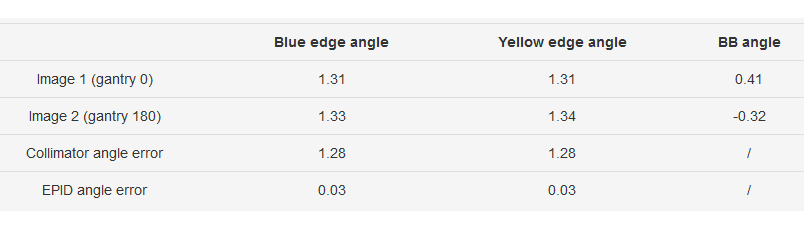If the angle of the BB line is around 0, the collimator angle error is calculated as:
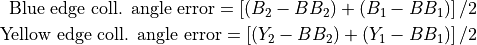
Where 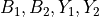 are the angles of blue and yellow edges of the field for images 1 and 2, and 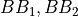 are the angles of the BBs.
If the angle of the BB line is around 90 degrees, the same formulation for collimator angle error is used as above. However, if any angle has a negative sign, like -89 degrees, the angle is beforehand converted onto the interval [0, 180] degrees. That is, -89 degrees transforms into +91 degrees.
Another result is displayed in the table, namely the EPID angle error. This is the rotation of the EPID around its center. It can be calculated from the previous data like so:
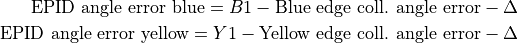
Where is 0 if the long field edge is horizontal, or 90 if the long field edge is vertical. An alternative to this formulation would be to calculate the difference in BB angles directly.
It is important that the sampling margin is chosen in such a way that the lines fitted to penumbra points match all the points with sufficient accuracy. The example bellow shows a good result. Each cross marks the difference between the measured penumbra point and the fitted line in pixels.
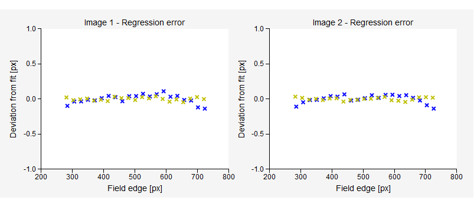The last plot (bellow) demonstrates how the optical field crosswires would show up on graph paper for gantry angles 0 and 180 if you performed the manual measurement. Note that the horizontal axis is the LAT spatial direction. Each field edge, as well as the BB line is plotted. Ideally, all field lines should match. But, because the angle 0 is not truly zero when one turns the gantry to 180 degrees, the field changes angle with respect to the graph paper.
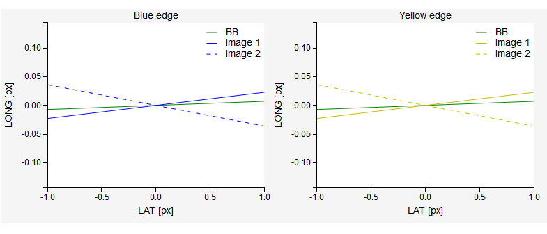Collimator relative¶
Now that you have established what the true angle is when the collimator indicator shows 0, you can measure other angles as well.
Remove the BBs from the couch. Set gantry to 0 and do not move it. For the first image set collimator angle to 0. For the second image pick whatever angle you wish. Select appropriate sampling direction so that the long field edge will be sampled. Switch image type to Collimator relative. Below is an example.
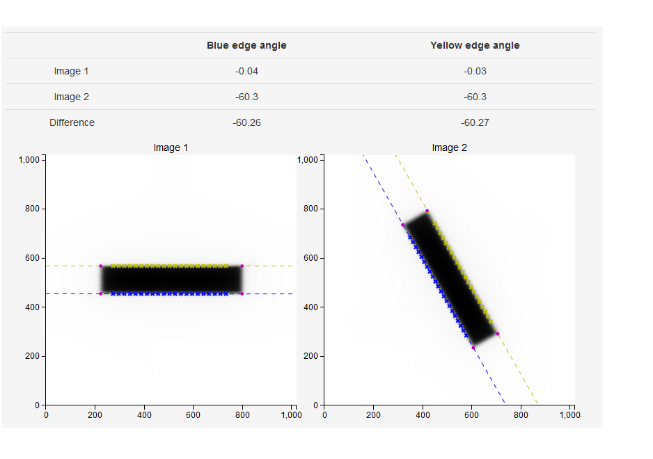The collimator rotation is now equal to the difference in measured angles:
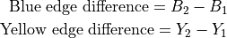
Note that angles are defined between -90 and 90 degrees with respect to the horizontal.
Couch relative¶
Put the two BBs back on the couch. Set gantry to 0 and do not move it. Prepare an open field of sufficient size so that when you rotate the couch the BBs will remain within the field. Start with couch 0 as image 1. For image 2 rotate the couch to the desired angle. See below.
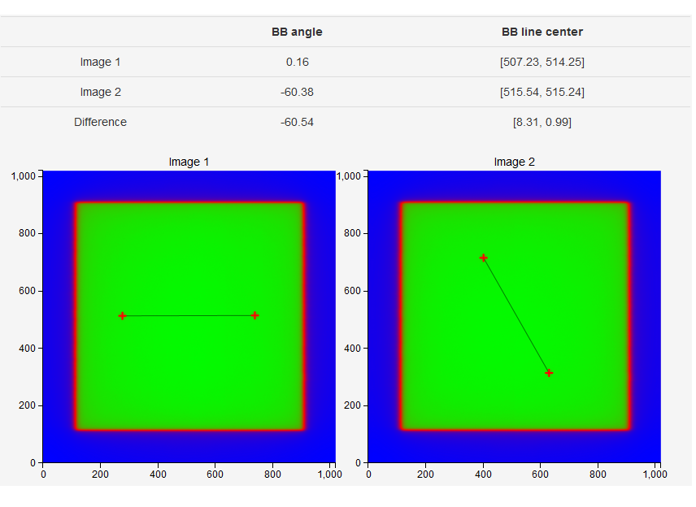The rotation of the couch is calculated as:
Note that angles are defined between -90 and 90 degrees with respect to the horizontal.
kV EPID rotation¶
For CBCT scans it is vital that the EPID does not exhibit significant rotation (twist) around its center. Otherwise 3D images will be distorted.
You can test the rotation of the kV detector with the Collimator absolute measurement. Use a smaller kV collimator so that you get a fixed square field on the imager. Check the High contrast (kV) images? option. Put two BBs on the couch and acquire two images, one at gantry 90 and the other at 270. Do the analysis. Note that the results pertain only to the situation when the detector plate is parallel to the ground.
Below is an example measurement on XVI with a 15x15 cassette.
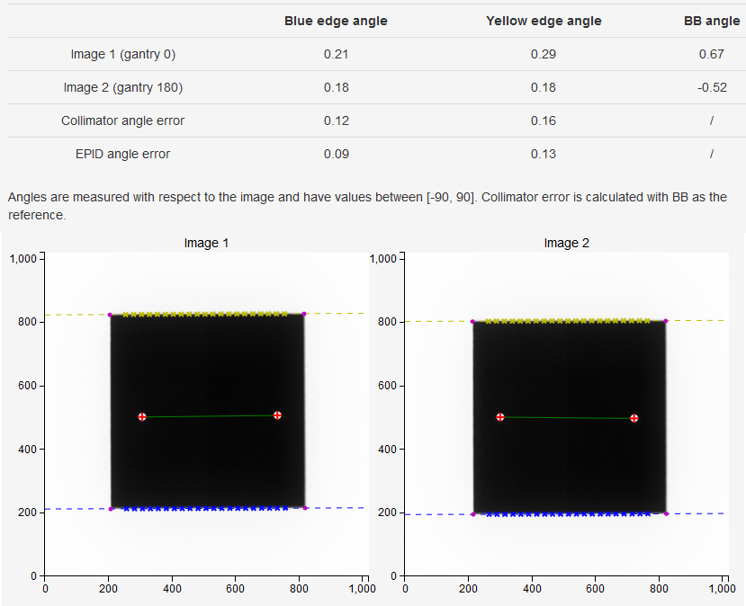A note on saving measurements¶
When saving measurements select the nominal angle of the collimator/couch that you are testing. Then manually type in the measured angle. This angle is not displayed in the results section, you have to determine it by hand. An example: the nominal angle you were testing is 0, and the results sections says the collimator error is -0.5 degrees. Your true 0 angle is therefore -0.5 degrees. The software will then apply the tolerance on the difference between the nominal and the true angle.